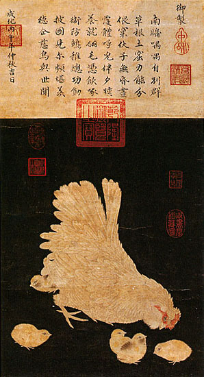

Poetry
Although the earlier Tang dynasty is viewed as the zenith era for Chinese poetry (particularly the shi style poetry of Du Fu, Li Bai, Bai Juyi), there were important poetic developments by famous poets of the Song era, with the flourishing of the ci form being especially being associated with Song poetry. Song developments in poetry included the works of the social critic and pioneer of the "new subjective style" Mei Yaochen (1002–1060), the politically controversial yet renowned master Su Shi (1037–1101), the eccentric yet brilliant Mi Fu (1051–1107), the premier Chinese female poet Li Qingzhao (1084–1151), and many others. Although having roots in the Liang dynasty (502–557 AD), and further development during the brief existence of the Southern Tang immediate preceding the Song, the ci form of Chinese poetry found its greatest acceptance and popularity during the Song dynasty, and was used by most Song poets. The high court Chancellor Fan Zhongyan (989–1052), ardent Neo-Confucian Ouyang Xiu (1007–1072), the great calligrapher Huang Tingjian (1045–1105), and the military general Xin Qiji (1140–1207) were especially known for their ci poetry, amongst many others. The great ci poet Li Yu (who ruled the Southern Tang under the name Li Houzhu) wrote some of his most famous works during his time as a prisoner at the first Song court, following the demise of his former kingdom: Li Yu is an important transitional igure, sometimes considered to be the first major Song poet, and sometimes acclaimed as the last major Tang poet.
Historiography in literature remained prominent during the Song, as it had in previous ages and would in successive ages of China. Along with Song Qi, the essayist and historian Ouyang Xiu were responsible for compiling the New Book of Tang by 1060, covering the history of the Tang dynasty. Chancellor Sima Guang (1019–1086), the political nemesis of Wang Anshi (1021–1086), was responsible for heading a team of scholars that compiled the enormous historical work of the Zizhi Tongjian, a universal history completed in 1084 AD with a total of over 3 million written Chinese characters in 294 volumes. It covered the major themes and intricate nuances of Chinese history from 425 BC during the Warring States all the way up to the 10th century and the fall of the Tang. In 1189 it was compiled and condensed into fifty-nine books by Zhu Xi (1130–1200), while this project was totally complete with the efforts of his disciples around the time of his death in 1200.
There were also very large encyclopedic works written in the Song period, such as the Four Great Books of Song compiled first by Li Fang in the 10th century and fully edited by the time of Cefu Yuangui in the 11th century. The largest of these was the 1013 publication of the Prime Tortoise of the Record Bureau, a massive encyclopedia consisting of 9.4 million written Chinese characters divided into 1000 volumes. There were also rhyme dictionaries written during the Song dynasty, such as the Jiyun of 1037. Although Neo-Confucianism became dominant over Buddhism in China during this period, there was still a significant amount of Buddhist literature. For example, there was the collection of Zen Buddhist kōans in the Blue Cliff Record of 1125, which was expanded by Yuanwu Keqin (1063–1135). 'Travel record literature' ('youji wenxue') was also a popular category of literature during the Song period, which was accounts of one's own travel experiences typically written in narrative or prose styles, and included authors such as Fan Chengda (1126–1193).[15] A great example of Chinese travel literature in the Song period would be Su Shi's (1037–1101) Record of Stone Bell Mountain.
There were many technical and scientific writings during the Song period. The two most eminent authors of the scientific and technical fields were Shen Kuo (1031–1095) and his contemporary Su Song (1020–1101). Shen Kuo published his Dream Pool Essays in 1088 AD, an enormous encyclopedic book that covered a wide range of subjects, including literature, art, military strategy, mathematics, astronomy, meteorology, geology, geography, metallurgy, engineering, hydraulics, architecture, zoology, botany, agronomy, medicine, anthropology, archeology, and more.
As for Shen Kuo's equally brilliant peer, Su Song created a celestial atlas of five different star maps, wrote the 1070 AD pharmaceutical treatise of the Ben Cao Tu Jing (Illustrated Pharmacopoeia), which had the related subjects of botany, zoology, metallurgy, and mineralogy, and wrote his famous horological treatise of the Xin Yi Xiang Fa Yao in 1092 AD, which described in full detail his ingenious astronomical clock tower constructed in the capital city of Kaifeng. Although these two figures were perhaps the greatest technical authors in their field during the time, there were many others. For producing textiles, Qin Guan's book of 1090 AD, the Can Shu (Book of Sericulture), included description of a silk-reeling machine that incorporated the earliest known use of the mechanical belt drive in order to function. In the literary field of agronomy, there was the Jiu Huang Huo Min Shu (The Rescue of the People; a Treatise on Famine Prevention and Relief) edited by Dong Wei in the 12th century, the Cha Lu (Record of Tea) written by Cai Xiang in 1060 AD, the Zhu Zi Cang Fa (Master Zhu on Managing Communal Granaries) written by Zhu Xi in 1182 AD, and many others.
There were also great authors of written works pertaining to geography and cartography during the Song, such as Yue Shi (his book in 983), Wang Zhu (in 1051), Li Dechu (in 1080), Chen Kunchen (in 1111), Ouyang Wen (in 1117), and Zhu Mu (in 1240). Although an early form of the local geographic gazetteer existed in China since the 1st century, the matured form known as "treatise on a place", or fangzhi, replaced the old "map guide", or tujing, under the Song. The major differences between the two were that fangzhi were products of local initiative and decision-making, were typically ten to fifty chapters in length, and were almost always printed for a large audience, whereas tujing were products of infrequent demands from the central government and were typically only four chapters long. The widespread availability of printing in the Song allowed many ordinary people to access materials that were once read almost exclusively by experts, such as printed texts and handbooks on agriculture, childbirth, pharmacy and medicine, domestic economics, geography, divination, and Taoist rituals.